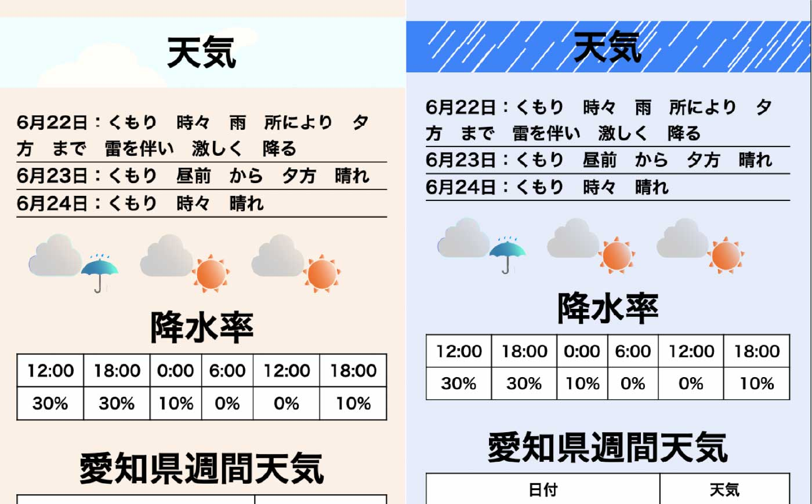

グラフィックデザイン
作成期間
約15時間
使用技術
Illustrator
Photoshop
名刺デザイン
矯正歯科、子供歯科の2種の名刺デザインを作りました。矯正歯科は高い技術と信頼性をアピールし最新機器を導入する高級感をアピールしています。子供歯科は地域密着型として、親しみやすさをアピールしています。ターゲットは矯正歯科が高級志向層、こども歯科が子供を持つ親をターゲットにしています。
デザイン
タイポグラフィ
グリッドシステム
幾何学
カラースキーム
グラデーション
ポスコン応募作品
youtubeはiframeで流すようにしていて、天候に合わせて流す曲をランダムに変えています。YouTubeのIDを天候ごとに分けた配列に入れています。天候コードに対応した配列を４つ用意してあり、対応する配列から、ランダムでIDを選びます。そのIDをiframeに代入して、動画を再生できるようにしています。
API
今回は、気象庁のお天気API、CatAPIの2つのAPIを使用しています。天気APIで現在の天気の情報を読み込んでいます。天気アプリのなので、最初に今日を含めた３日間の天気、今日の降水確率、一週間の天気を表示します。
雨や雪の日は気分が沈みがちになると思うので、元気が出るように、ランダムに猫の画像を表示するAPIを使用した機能があります。ボタンの上には晴れの日と曇りの日は「猫がいません」と表示され、雨と雪の日は「猫がいます」と表示されます。雨と雪の日の場合のみ、ボタンを押すことで反応し、下に猫の画像が出るようになっています。